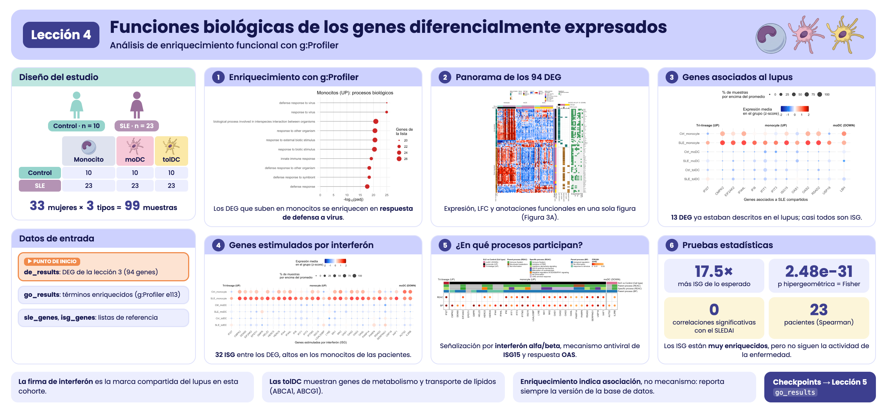
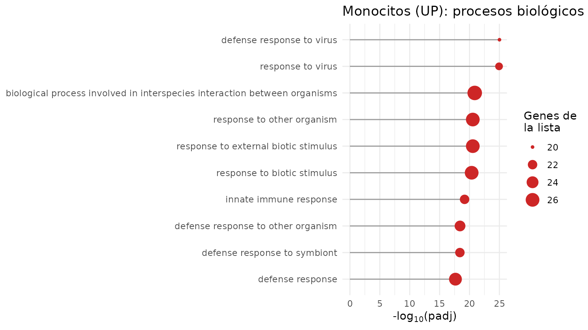
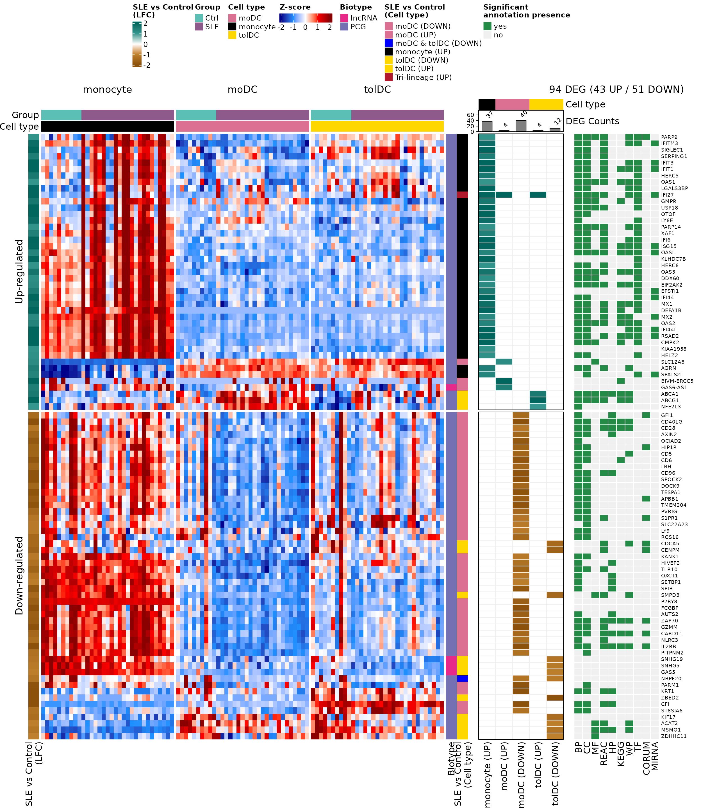
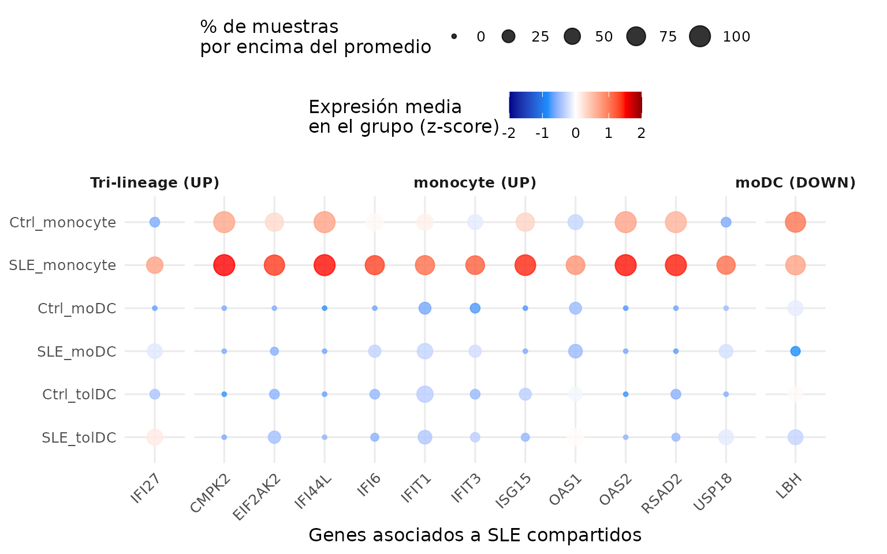
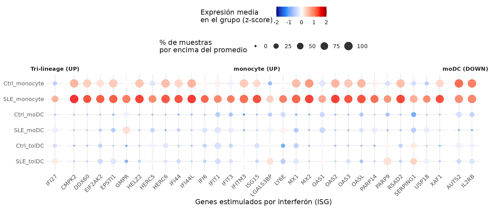
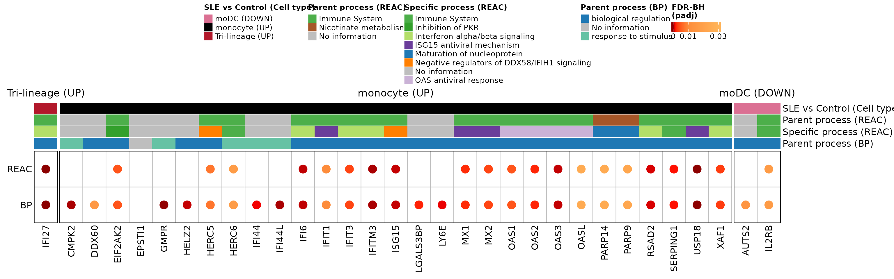
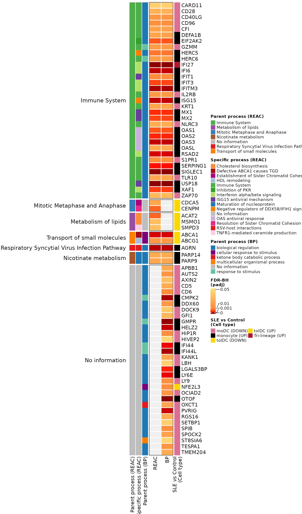
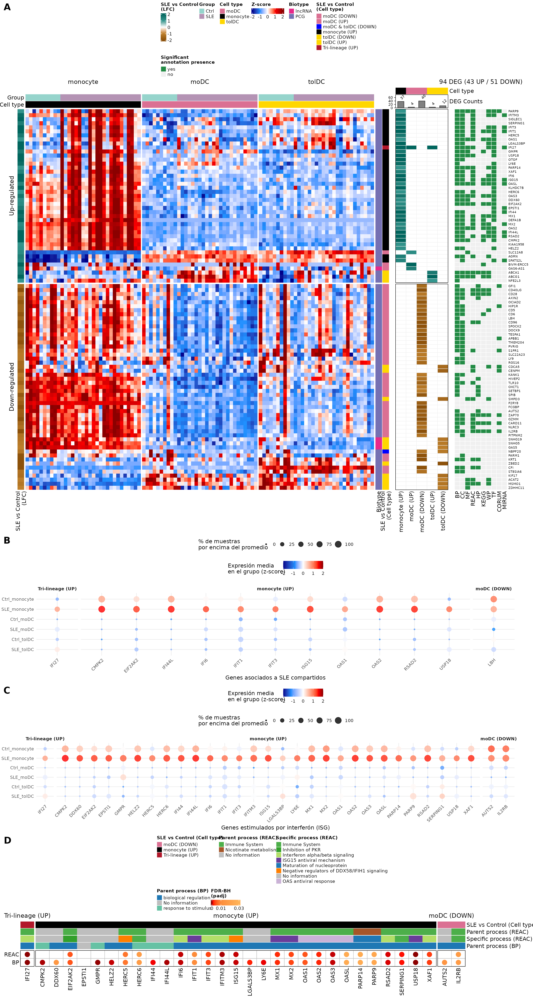

Lección 4: Funciones biológicas de los genes diferencialmente expresados
Análisis de enriquecimiento funcional con g:Profiler
2026-10-28
Source:vignettes/l4_GOterms_es.Rmd
l4_GOterms_es.RmdBienvenida
En la lección anterior encontramos 94 genes diferencialmente expresados (DEG) entre pacientes con lupus y controles. Una lista de genes, por sí sola, dice poco: la pregunta ahora es ¿qué hacen esos genes?, ¿participan en procesos biológicos comunes?
Lo que necesitas saber antes: haber hecho la lección Genes diferencialmente expresados entre pacientes y controles.
Al terminar podrás:
- Explicar qué es un análisis de enriquecimiento funcional y qué pregunta responde.
- Hacer un análisis de enriquecimiento con g:Profiler e interpretar sus resultados.
- Reconocer las principales bases de datos funcionales (Gene Ontology, Reactome, KEGG…).
- Identificar genes asociados al lupus y genes estimulados por interferón entre los DEG.
- Reproducir la Figura 3 del artículo.
- Correlacionar la expresión de los ISG con la actividad de la enfermedad (SLEDAI).
Tiempo estimado: 1.5 horas.
Mapa de la lección
flowchart LR A["de_results
(lección 3)"] --> B["94 DEG por tipo
celular y dirección"] B --> C["g:Profiler:
enriquecimiento"] B --> D["Listas de referencia:
SLE e ISG"] C --> E["3A. Heatmaps DEG,
LFC y anotaciones"] D --> F["3B y 3C. Dot plots"] C --> G["3D. Procesos REAC y BP"] E --> H["Figura 3"] F --> H G --> H D --> I["ISG vs SLEDAI:
Spearman"]
Glosario
Estos son los términos que usaremos. Vuelve aquí cada vez que lo necesites.
- Anotación funcional: información sobre qué hace un gen (procesos, rutas, localización…).
- Término: una categoría funcional, por ejemplo “respuesta a virus”, con su lista de genes.
- Enriquecimiento funcional: prueba si un término aparece en nuestra lista de genes más de lo esperado por azar.
- Prueba hipergeométrica: prueba estadística del enriquecimiento (como sacar canicas de una bolsa sin reemplazo).
- Gene Ontology (GO): vocabulario de funciones con tres ramas: proceso biológico (BP), componente celular (CC) y función molecular (MF).
- Reactome (REAC), KEGG, WikiPathways (WP): bases de datos de rutas biológicas.
- TF: sitios de unión de factores de transcripción. MIRNA: blancos de microRNAs. HP: fenotipos humanos. CORUM: complejos de proteínas.
- Término padre / específico: las bases de datos están organizadas en jerarquías; un término general (padre) contiene términos más específicos.
- ISG (interferon-stimulated genes): genes que se encienden en respuesta al interferón.
- SLEDAI (SLE Disease Activity Index): puntaje de actividad del lupus; más alto = enfermedad más activa.
- Correlación de Spearman (rho): mide si dos variables suben o bajan juntas comparando sus rangos; va de −1 a 1.

Resumen visual de la lección 4.
1. Preparación
library(GeneExprLupusMx) # datos del paquete
library(tidyverse) # manipulación de tablas y gráficas
library(ComplexHeatmap) # heatmaps
library(circlize) # escalas de color para ComplexHeatmap
library(grid) # dibujar formas dentro de los heatmaps
library(cowplot) # unir gráficas en un panelColores y umbrales (los mismos de la lección anterior):
cell_color <- c(monocyte = "black", moDC = "palevioletred", tolDC = "gold1")
group_color <- c(Ctrl = "#96d4ccff", SLE = "#b493b4ff")
lfc_threshold <- 1
padj_threshold <- 0.05Punto de partida: los DEG de la lección anterior
El checkpoint de_results contiene los resultados de
DESeq2 de los tres tipos celulares. Recuperamos los DEG en
una sola tabla:
deg_df <- bind_rows(lapply(names(de_results), function(cell) {
de_results[[cell]] %>%
filter(!is.na(padj), padj < padj_threshold, abs(log2FoldChange) >= lfc_threshold) %>%
mutate(Cell_type = cell,
Expression = ifelse(log2FoldChange > 0, "Up-regulated", "Down-regulated"),
query = paste("SLE", ifelse(log2FoldChange > 0, "UP", "DOWN"), cell, sep = "_"))
}))
dplyr::count(deg_df, query)
#> query n
#> 1 SLE_DOWN_moDC 40
#> 2 SLE_DOWN_tolDC 12
#> 3 SLE_UP_moDC 4
#> 4 SLE_UP_monocyte 37
#> 5 SLE_UP_tolDC 4Cada combinación de tipo celular y dirección es una lista de
genes (query). Los monocitos no tienen genes que
bajen, así que hay cinco listas.
Un mismo gen puede ser DEG en más de un tipo celular. Para las gráficas necesitamos una fila por gen (94 genes) y una etiqueta que describa su patrón: en qué tipos celulares cambia.
genes_in <- function(cell, direction) {
deg_df$gene[deg_df$Cell_type == cell & deg_df$Expression == direction]
}
gene_info <- deg_df %>%
distinct(gene, .keep_all = TRUE) %>% # una fila por gen
mutate(pattern = case_when(
gene %in% Reduce(intersect, list(genes_in("monocyte", "Up-regulated"),
genes_in("moDC", "Up-regulated"),
genes_in("tolDC", "Up-regulated"))) ~ "Tri-lineage (UP)",
gene %in% intersect(genes_in("moDC", "Down-regulated"),
genes_in("tolDC", "Down-regulated")) ~ "moDC & tolDC (DOWN)",
gene %in% genes_in("monocyte", "Up-regulated") ~ "monocyte (UP)",
gene %in% genes_in("moDC", "Up-regulated") ~ "moDC (UP)",
gene %in% genes_in("moDC", "Down-regulated") ~ "moDC (DOWN)",
gene %in% genes_in("tolDC", "Up-regulated") ~ "tolDC (UP)",
gene %in% genes_in("tolDC", "Down-regulated") ~ "tolDC (DOWN)"))
dplyr::count(gene_info, pattern)
#> pattern n
#> 1 Tri-lineage (UP) 1
#> 2 moDC & tolDC (DOWN) 1
#> 3 moDC (DOWN) 39
#> 4 moDC (UP) 3
#> 5 monocyte (UP) 36
#> 6 tolDC (DOWN) 11
#> 7 tolDC (UP) 3Tri-lineage (UP) son los genes que suben en los tres
tipos celulares (solo IFI27) y moDC & tolDC
(DOWN), los que bajan en ambas células dendríticas.
2. ¿Qué es un análisis de enriquecimiento?
Imagina una bolsa con 20,000 canicas (todos los genes del genoma). 200 de ellas son rojas: los genes de un término, por ejemplo “respuesta a virus”. Sacamos al azar 37 canicas (nuestros DEG de monocitos). Esperaríamos sacar menos de una roja. Si sacamos 15, algo no es azar: nuestros genes están enriquecidos en ese término.
La prueba hipergeométrica calcula qué tan probable es sacar tantas canicas rojas por azar. Como se prueban miles de términos a la vez, los valores p se corrigen (FDR), igual que en la expresión diferencial.
Enriquecimiento no es causalidad. Que una lista esté enriquecida en “respuesta a virus” no significa que haya un virus: significa que los genes que cambian suelen participar juntos en esa función. Es una pista para generar hipótesis.
3. Paso 1: enriquecimiento con g:Profiler
g:Profiler consulta al
mismo tiempo varias bases de datos (GO, Reactome, KEGG, WikiPathways,
TF, miRNA, HP, CORUM). En R se usa con la función gost()
del paquete gprofiler2:
library(gprofiler2)
deg_lists <- split(deg_df$gene, deg_df$query) # una lista de genes por query
# Versión archivada de g:Profiler (junio de 2025)
set_base_url("https://biit.cs.ut.ee/gprofiler_archive3/e113_eg59_p19")
gost_res <- gost(deg_lists,
organism = "hsapiens", # humano
correction_method = "fdr", # corrección por comparaciones múltiples
user_threshold = 0.05, # padj máximo
evcodes = TRUE) # incluir qué genes tiene cada términoLas bases de datos cambian. g:Profiler actualiza sus
anotaciones varias veces al año, así que la misma lista de genes puede
dar resultados algo distintos con el tiempo. Para que tus análisis sean
reproducibles, fija la versión con
set_base_url() y repórtala.
gost() necesita conexión a internet. Para que esta
lección funcione sin conexión, el paquete incluye el resultado como
checkpoint, go_results:
attr(go_results, "gprofiler_version")
#> [1] "e113_eg59_p19_903d2221"
glimpse(go_results)
#> Rows: 943
#> Columns: 10
#> $ query <chr> "SLE_DOWN_moDC", "SLE_DOWN_moDC", "SLE_DOWN_moDC", "…
#> $ source <chr> "CORUM", "CORUM", "CORUM", "CORUM", "CORUM", "CORUM"…
#> $ term_id <chr> "CORUM:7577", "CORUM:6805", "CORUM:6799", "CORUM:679…
#> $ term_name <chr> "APP-APBB1-KAT5 complex", "S1PR1-beta-arrestin 2 com…
#> $ term_size <int> 3, 2, 3, 2, 3, 2, 3, 3, 2, 3, 2, 3, 3, 3, 4, 4, 560,…
#> $ query_size <int> 7, 7, 7, 7, 7, 7, 7, 7, 7, 7, 7, 7, 7, 7, 7, 7, 36, …
#> $ intersection_size <int> 1, 1, 1, 1, 1, 1, 1, 1, 1, 1, 1, 1, 1, 1, 1, 1, 10, …
#> $ p_value <dbl> 7.524322e-03, 7.524322e-03, 7.524322e-03, 7.524322e-…
#> $ parents <chr> "CORUM:0000000", "CORUM:0000000", "CORUM:0000000", "…
#> $ intersection <chr> "APBB1", "S1PR1", "S1PR1", "S1PR1", "APBB1", "HIP1R"…Las columnas más importantes son:
| Columna | Significado |
|---|---|
query |
Lista de genes (tipo celular y dirección) |
source |
Base de datos |
term_name |
Nombre del término |
term_size |
Genes anotados al término en todo el genoma |
intersection_size |
Genes de nuestra lista anotados al término |
p_value |
Valor p ajustado (FDR) |
intersection |
Cuáles son esos genes |
¿Cuántos términos significativos hay por lista y base de datos?
go_results %>%
dplyr::count(query, source) %>%
pivot_wider(names_from = source, values_from = n, values_fill = 0)
#> # A tibble: 5 × 11
#> query CORUM `GO:BP` `GO:CC` HP KEGG REAC WP `GO:MF` MIRNA TF
#> <chr> <int> <int> <int> <int> <int> <int> <int> <int> <int> <int>
#> 1 SLE_DOWN_mo… 16 201 7 48 10 1 8 0 0 0
#> 2 SLE_DOWN_to… 6 0 0 3 0 10 12 8 0 0
#> 3 SLE_UP_moDC 0 0 0 0 1 1 3 4 0 0
#> 4 SLE_UP_mono… 2 183 2 0 10 19 12 15 1 78
#> 5 SLE_UP_tolDC 0 172 6 14 5 16 16 53 0 0Las listas con más genes (monocitos UP, moDC DOWN) tienen más términos, y la mayoría vienen de GO:BP, la base de datos más grande.
3.1 Los términos más significativos
Veamos los 10 procesos biológicos (GO:BP) más significativos de los monocitos:
go_results %>%
filter(query == "SLE_UP_monocyte", source == "GO:BP") %>%
slice_min(p_value, n = 10, with_ties = FALSE) %>%
ggplot(aes(x = -log10(p_value), y = reorder(term_name, -log10(p_value)))) +
geom_segment(aes(x = 0, xend = -log10(p_value), yend = term_name), color = "grey60") +
geom_point(aes(size = intersection_size), color = "firebrick3") +
labs(x = expression("-log"[10] * "(padj)"), y = NULL, size = "Genes de\nla lista",
title = "Monocitos (UP): procesos biológicos") +
theme_minimal()
Todos los términos tienen que ver con la respuesta a virus y al interferón: la firma de interferón que vimos en las lecciones anteriores, ahora respaldada por el análisis de enriquecimiento.
Reto 1. ¿Cuáles son los 5 términos de Reactome
(REAC) más significativos en las tolDC con genes que suben
(SLE_UP_tolDC)? ¿Qué tipo de procesos son?
Ver solución
go_results %>%
filter(query == "SLE_UP_tolDC", source == "REAC") %>%
slice_min(p_value, n = 5, with_ties = FALSE) %>%
dplyr::select(term_name, intersection_size, p_value, intersection)
#> term_name
#> 1 NR1H3 & NR1H2 regulate gene expression linked to cholesterol transport and efflux
#> 2 NR1H2 and NR1H3-mediated signaling
#> 3 Plasma lipoprotein assembly, remodeling, and clearance
#> 4 Defective ABCA1 causes TGD
#> 5 HDL assembly
#> intersection_size p_value intersection
#> 1 2 0.0006116482 ABCA1,ABCG1
#> 2 2 0.0006116482 ABCA1,ABCG1
#> 3 2 0.0010219157 ABCA1,ABCG1
#> 4 1 0.0034075420 ABCA1
#> 5 1 0.0084434412 ABCA1Son procesos del metabolismo y transporte de lípidos y
colesterol (por ejemplo, la ruta de ABCA1), muy
distintos de la respuesta a interferón de los monocitos.
4. Paso 2: panorama de los 94 DEG (Figura 3A)
Construiremos tres heatmaps alineados por gen:
- Expresión (z-score) de cada DEG en todas las muestras.
- LFC de cada gen en cada lista de DEG.
- Presencia de anotación significativa en cada base de datos.
4.1 Heatmap de expresión
Ordenamos las muestras por tipo celular y grupo, y tomamos los
z-scores de los 94 genes del checkpoint zscore_mat:
sample_order <- metadata_cleaned %>%
mutate(Cell_type = factor(Cell_type, levels = c("monocyte", "moDC", "tolDC"))) %>%
arrange(Cell_type, Group)
deg_mat <- zscore_mat[gene_info$gene, sample_order$sample_ID]
dim(deg_mat)
#> [1] 94 99Agregamos anotaciones: arriba, el grupo y el tipo celular de cada
muestra; a la izquierda, el LFC; a la derecha, el biotipo del gen (de
biotype_summary) y su patrón.
pattern_color <- c("Tri-lineage (UP)" = "#b2182b", "monocyte (UP)" = "black",
"moDC (UP)" = "palevioletred", "moDC (DOWN)" = "palevioletred",
"tolDC (UP)" = "gold1", "tolDC (DOWN)" = "gold1",
"moDC & tolDC (DOWN)" = "blue")
biotype_color <- c("PCG" = "#7570B3", "lncRNA" = "#E7298A")
lfc_color <- colorRamp2(c(-2, -1, 0, 1, 2), c("#8c510a", "#bf812d", "white", "#35978f", "#01665e"))
zscore_color <- colorRamp2(c(-2, -1, 0, 1, 2), c("darkblue", "dodgerblue", "white", "red", "darkred"))
gene_biotype <- biotype_summary$Group_biotype[match(gene_info$gene, biotype_summary$gene)]
table(gene_biotype)
#> gene_biotype
#> lncRNA PCG
#> 4 90
sample_anno <- HeatmapAnnotation(
Group = as.character(sample_order$Group),
"Cell type" = as.character(sample_order$Cell_type),
col = list(Group = group_color, "Cell type" = cell_color),
annotation_name_side = "left")
ht_expression <- Heatmap(
deg_mat, name = "Z-score", col = zscore_color,
cluster_rows = TRUE, cluster_columns = FALSE, show_row_dend = FALSE,
show_row_names = FALSE, show_column_names = FALSE,
top_annotation = sample_anno,
left_annotation = rowAnnotation("SLE vs Control\n(LFC)" = gene_info$log2FoldChange,
col = list("SLE vs Control\n(LFC)" = lfc_color)),
right_annotation = rowAnnotation(Biotype = gene_biotype,
"SLE vs Control\n(Cell type)" = gene_info$pattern,
col = list(Biotype = biotype_color,
"SLE vs Control\n(Cell type)" = pattern_color)),
column_split = sample_order$Cell_type,
row_split = factor(gene_info$Expression, levels = c("Up-regulated", "Down-regulated")),
heatmap_legend_param = list(direction = "horizontal"))4.2 Heatmap de LFC por lista
Una matriz con el LFC de cada gen en cada lista de DEG (0 si el gen no es DEG en esa lista). Arriba, un barplot con cuántos DEG tiene cada lista:
lfc_mat <- deg_df %>%
mutate(column = str_replace(query, "SLE_(UP|DOWN)_(.*)", "\\2 (\\1)")) %>% # "monocyte (UP)"
dplyr::select(gene, column, log2FoldChange) %>%
pivot_wider(names_from = column, values_from = log2FoldChange, values_fill = 0) %>%
column_to_rownames("gene") %>%
as.matrix()
lfc_mat <- lfc_mat[gene_info$gene, c("monocyte (UP)", "moDC (UP)", "moDC (DOWN)",
"tolDC (UP)", "tolDC (DOWN)")]
colSums(lfc_mat != 0)
#> monocyte (UP) moDC (UP) moDC (DOWN) tolDC (UP) tolDC (DOWN)
#> 37 4 40 4 12
ht_lfc <- Heatmap(
lfc_mat, name = "SLE vs Control\n(LFC)", col = lfc_color, show_heatmap_legend = FALSE,
cluster_columns = FALSE, show_row_names = FALSE,
rect_gp = gpar(col = "#f0f0f0", lwd = 1), border = TRUE,
top_annotation = HeatmapAnnotation(
"Cell type" = c("monocyte", "moDC", "moDC", "tolDC", "tolDC"),
"DEG Counts" = anno_barplot(colSums(lfc_mat != 0), add_numbers = TRUE, height = unit(1, "cm")),
col = list("Cell type" = cell_color), show_legend = FALSE),
width = unit(4, "cm"))4.3 Heatmap de anotaciones
¿En qué bases de datos tiene cada gen al menos un término
significativo? Separamos la columna intersection (genes
separados por comas) en una fila por gen:
gene_source <- go_results %>%
dplyr::select(source, intersection) %>%
separate_rows(intersection, sep = ",") %>%
distinct(gene = intersection, source = str_remove(source, "GO:"))
presence_mat <- gene_source %>%
mutate(present = "yes") %>%
pivot_wider(names_from = source, values_from = present, values_fill = "no") %>%
right_join(tibble(gene = gene_info$gene), by = "gene") %>% # los 94 DEG
mutate(across(-gene, ~ replace_na(.x, "no"))) %>%
column_to_rownames("gene") %>%
as.matrix()
presence_mat <- presence_mat[gene_info$gene,
c("BP", "CC", "MF", "REAC", "HP", "KEGG", "WP", "TF", "CORUM", "MIRNA")]
colSums(presence_mat == "yes")
#> BP CC MF REAC HP KEGG WP TF CORUM MIRNA
#> 70 63 19 43 17 22 31 31 10 12
n_up <- sum(gene_info$Expression == "Up-regulated")
n_down <- sum(gene_info$Expression == "Down-regulated")
ht_presence <- Heatmap(
presence_mat, name = "Significant\nannotation presence",
col = c(yes = "#238b45", no = "#f0f0f0"),
cluster_columns = FALSE, show_row_names = TRUE, row_names_gp = gpar(fontsize = 7),
rect_gp = gpar(col = "white", lwd = 1),
column_title = paste0(nrow(gene_info), " DEG (", n_up, " UP / ", n_down, " DOWN)"),
width = unit(4, "cm"))4.4 Los tres juntos
Al unir heatmaps con +,
ComplexHeatmap aplica a todos el orden de filas del
primero, así que cada fila es el mismo gen en los tres:
ht_fig3a <- ht_expression + ht_lfc + ht_presence
ht_opt$message <- FALSE
draw(ht_fig3a, ht_gap = unit(5, "mm"), merge_legends = TRUE,
heatmap_legend_side = "top", annotation_legend_side = "top")
¿Qué observas?
- Los genes que suben (bloque superior) son sobre todo de monocitos y tienen muchas anotaciones en casi todas las bases de datos: son genes bien estudiados de la respuesta inmune.
- Los genes que bajan son sobre todo de moDC; varios tienen pocas anotaciones o ninguna, entre ellos los lncRNA.
- En la columna de expresión, el bloque de monocitos de las pacientes destaca en rojo para los genes que suben: es la firma de interferón.
5. Paso 3: genes asociados al lupus e ISG (Figuras 3B y 3C)
Comparamos los DEG con dos listas de referencia incluidas en el paquete:
-
sle_genes: genes asociados al lupus en la literatura (cuatro estudios). -
isg_genes: 423 genes estimulados por interferón (Yu et al., 2025).
sle_deg <- intersect(unique(sle_genes$Gene_name), gene_info$gene)
isg_deg <- intersect(isg_genes$genes, gene_info$gene)
sle_deg
#> [1] "IFI44L" "RSAD2" "USP18" "IFIT3" "CMPK2" "ISG15" "IFI6"
#> [8] "IFI27" "IFIT1" "LBH" "OAS1" "OAS2" "EIF2AK2"
length(isg_deg)
#> [1] 3213 DEG ya estaban asociados al lupus y 32 son ISG. Los graficamos como en la lección anterior: un dot plot con la expresión media (z-score) por grupo y tipo celular. Como lo haremos dos veces, lo guardamos en una función:
plot_gene_dots <- function(genes, x_label, gene_levels = sort(genes)) {
dots_df <- as.data.frame(zscore_mat[genes, ]) %>%
rownames_to_column("gene") %>%
pivot_longer(-gene, names_to = "sample_ID", values_to = "expression") %>%
left_join(dplyr::select(metadata_cleaned, sample_ID, Group, Cell_type), by = "sample_ID") %>%
group_by(Group, Cell_type, gene) %>%
summarise(mean_expression = mean(expression),
pct_expressed = 100 * mean(expression > 0), .groups = "drop") %>%
left_join(dplyr::select(gene_info, gene, pattern), by = "gene") %>%
mutate(condition = factor(paste(Group, Cell_type, sep = "_"),
levels = c("SLE_tolDC", "Ctrl_tolDC", "SLE_moDC",
"Ctrl_moDC", "SLE_monocyte", "Ctrl_monocyte")),
pattern = factor(pattern, levels = c("Tri-lineage (UP)", "monocyte (UP)", "moDC (DOWN)")),
gene = factor(gene, levels = gene_levels))
min_val <- min(dots_df$mean_expression)
max_val <- max(dots_df$mean_expression)
ggplot(dots_df, aes(x = gene, y = condition, color = mean_expression, size = pct_expressed)) +
geom_point(alpha = 0.8) +
scale_color_gradientn(colors = c("darkblue", "dodgerblue", "white", "red", "darkred"),
values = scales::rescale(c(-2, min_val, 0, max_val, 2)),
limits = c(-2, 2), oob = scales::squish) +
ggh4x::facet_grid2(~ pattern, scales = "free_x", space = "free_x",
strip = ggh4x::strip_vanilla(clip = "off")) +
labs(x = x_label, y = NULL,
color = "Expresión media\nen el grupo (z-score)",
size = "% de muestras\npor encima del promedio") +
theme_minimal(base_size = 12) +
theme(legend.position = "top", legend.box = "vertical",
strip.text.x = element_text(face = "bold"),
axis.text.x = element_text(angle = 45, hjust = 1),
plot.margin = margin(5.5, 40, 5.5, 5.5)) # margen para que no se corte la última etiqueta
}
p_sle <- plot_gene_dots(sle_deg, "Genes asociados a SLE compartidos",
gene_levels = c("IFI27", "CMPK2", "EIF2AK2", "IFI44L", "IFI6", "IFIT1",
"IFIT3", "ISG15", "OAS1", "OAS2", "RSAD2", "USP18", "LBH"))
p_sle
p_isg <- plot_gene_dots(isg_deg, "Genes estimulados por interferón (ISG)")
p_isg
Casi todos los genes asociados al lupus que encontramos son también
ISG, y están altos sobre todo en los monocitos
de las pacientes (fila SLE_monocyte).
IFI27 es la excepción que confirma la regla: sube en los
tres tipos celulares. En cambio, LBH, AUTS2 e
IL2RB son DEG que bajan en las moDC de las
pacientes. En la gráfica destacan más por su alta expresión en los
monocitos, porque el z-score compara cada muestra con todas las demás,
de los tres tipos celulares.
5.1 ¿Hay más ISG de los esperados por azar?
32 de los 94 DEG son ISG. ¿Es mucho? Lo resolvemos con la prueba hipergeométrica de la sección 2: si sacamos 94 canicas (DEG) de una bolsa con todos los genes del paquete, ¿qué tan probable es que 32 o más sean rojas (ISG)?
Necesitamos cuatro números:
N <- nrow(de_results$monocyte) # universo: todos los genes del paquete
m <- nrow(isg_genes) # ISG en la lista de referencia
k <- nrow(gene_info) # DEG
q <- length(isg_deg) # DEG que son ISG
c(N = N, m = m, k = k, q = q)
#> N m k q
#> 21718 423 94 32
k * m / N # ISG esperados entre los DEG por azar
#> [1] 1.830832Por azar esperaríamos menos de 2 ISG entre los DEG, y encontramos 32: un enriquecimiento de 17.5 veces.
phyper() da la probabilidad de sacar más
de q - 1 canicas rojas, es decir, q o
más. Usamos lower.tail = FALSE porque nos interesa la cola
superior (sobrerrepresentación):
p_hyper <- phyper(q - 1, m, N - m, k, lower.tail = FALSE)
p_hyper
#> [1] 2.484086e-31La prueba exacta de Fisher hace la misma pregunta
con una tabla de 2 × 2. Con la alternativa de una cola
("greater") es exactamente la misma prueba:
isg_table <- matrix(c(q, k - q, m - q, N - m - k + q), nrow = 2,
dimnames = list(ISG = c("Sí", "No"), DEG = c("Sí", "No")))
isg_table
#> DEG
#> ISG Sí No
#> Sí 32 391
#> No 62 21233
isg_fisher <- fisher.test(isg_table, alternative = "greater")
isg_fisher
#>
#> Fisher's Exact Test for Count Data
#>
#> data: isg_table
#> p-value < 2.2e-16
#> alternative hypothesis: true odds ratio is greater than 1
#> 95 percent confidence interval:
#> 18.80807 Inf
#> sample estimates:
#> odds ratio
#> 27.98511
isg_fisher$p.value
#> [1] 2.484086e-31Al imprimir el resultado, R muestra
p-value < 2.2e-16: es el límite que usa para
mostrar valores p, no el valor real. El valor completo
está en isg_fisher$p.value y coincide con
phyper(): 2.48e-31. Las dos pruebas llegan a la misma
conclusión: los ISG están fuertemente enriquecidos entre los
DEG (razón de momios = 28).
Reto 2. 19 de los 423 ISG de la lista de referencia
no están entre los 21,718 genes del paquete. Repite la prueba usando
como m solo los ISG que están en el universo. ¿Cambia la
conclusión?
Ver solución
m_universe <- sum(isg_genes$genes %in% de_results$monocyte$gene)
m_universe
#> [1] 404
phyper(q - 1, m_universe, N - m_universe, k, lower.tail = FALSE)
#> [1] 5.682244e-32El valor p es aún más pequeño y la conclusión no cambia. Usar solo los genes del universo es lo más estricto: un gen que no se midió no puede salir como DEG.
6. Paso 4: ¿en qué procesos participan los ISG? (Figura 3D)
Para cada ISG buscamos sus términos de Reactome (REAC) y GO:BP. Como cada gen puede estar en muchos términos, resumimos con dos:
-
Proceso específico: el término con
menos genes (
term_sizemínimo), el más concreto. -
Proceso padre: el término con más
genes (
term_sizemáximo), el más general.
process_info <- go_results %>%
filter(source %in% c("REAC", "GO:BP")) %>%
separate_rows(intersection, sep = ",") %>%
dplyr::rename(gene = intersection) %>%
group_by(source, gene) %>%
summarise(specific_process = term_name[which.min(term_size)],
parent_process = term_name[which.max(term_size)],
.groups = "drop")
process_info %>% filter(gene %in% c("ISG15", "OAS1"))
#> # A tibble: 4 × 4
#> source gene specific_process parent_process
#> <chr> <chr> <chr> <chr>
#> 1 GO:BP ISG15 positive regulation of protein oligomerization biological regula…
#> 2 GO:BP OAS1 negative regulation of IP-10 production biological regula…
#> 3 REAC ISG15 Negative regulators of DDX58/IFIH1 signaling Immune System
#> 4 REAC OAS1 OAS antiviral response Immune SystemConstruimos una matriz con una fila por base de datos (REAC y BP) y una columna por ISG. Cada celda lleva el padj de expresión diferencial del gen si el gen tiene anotación en esa base de datos, y queda vacía si no la tiene:
isg_order <- gene_info %>%
filter(gene %in% isg_deg) %>%
mutate(pattern = factor(pattern, levels = c("Tri-lineage (UP)", "monocyte (UP)", "moDC (DOWN)"))) %>%
arrange(pattern, gene)
isg_padj <- sapply(c(REAC = "REAC", BP = "GO:BP"), function(src) {
annotated <- isg_order$gene %in% process_info$gene[process_info$source == src]
ifelse(annotated, isg_order$padj, NA)
})
isg_padj <- t(isg_padj)
colnames(isg_padj) <- isg_order$gene
isg_padj[, 1:6]
#> IFI27 CMPK2 DDX60 EIF2AK2 EPSTI1 GMPR
#> REAC 1.137584e-07 NA NA 0.004584681 NA NA
#> BP 1.137584e-07 0.0002735559 0.01576357 0.004584681 NA 6.766521e-05Las anotaciones de arriba muestran el patrón de cada gen y sus procesos. Los genes sin anotación aparecen como “No information”:
# proceso de cada gen en una base de datos ("No information" si no tiene anotación)
process_of <- function(src, column, genes = isg_order$gene) {
info <- filter(process_info, source == src)
value <- info[[column]][match(genes, info$gene)]
replace_na(value, "No information")
}
# colores de los procesos (los usaremos también en la Figura S4)
reac_specific_color <- c(
"Interferon alpha/beta signaling" = "#b3de69",
"Immune System" = "#4daf4a",
"Complement cascade" = "#80b1d3",
"Alternative complement activation" = "#8c6bb1",
"Synthesis of PI" = "#ffff33",
"Defective ABCA1 causes TGD" = "#a50f15",
"HDL remodeling" = "#a6bddb",
"Resolution of Sister Chromatid Cohesion" = "#e7298a",
"Cholesterol biosynthesis" = "#fd8d3c",
"TNFR1-mediated ceramide production" = "#fccde5",
"Establishment of Sister Chromatid Cohesion" = "#ae017e",
"Maturation of nucleoprotein" = "#1f78b4",
"RSV-host interactions" = "#e41a1c",
"Inhibition of PKR" = "#33a02c",
"Negative regulators of DDX58/IFIH1 signaling" = "#ff7f00",
"ISG15 antiviral mechanism" = "#6a3d9a",
"OAS antiviral response" = "#cab2d6",
"No information" = "gray")
reac_parent_color <- c(
"Immune System" = "#4daf4a",
"Synthesis of PI" = "#ffff33",
"Mitotic Metaphase and Anaphase" = "#377eb8",
"Metabolism of lipids" = "#984ea3",
"Transport of small molecules" = "#ff7f00",
"Respiratory Syncytial Virus Infection Pathway" = "#e41a1c",
"Nicotinate metabolism" = "#a65628",
"No information" = "gray")
bp_parent_color <- c(
"response to stimulus" = "#66c2a4",
"cellular response to stimulus" = "#7a0177",
"cell communication" = "#3f007d",
"positive regulation of biological process" = "#fcc5c0",
"biological regulation" = "#1f78b4",
"ketone body catabolic process" = "#e31a1c",
"multicellular organismal process" = "#ff7f00",
"No information" = "gray")
padj_color <- colorRamp2(c(0, 0.001, 0.01, 0.05), c("darkred", "red", "#fd8d3c", "#fed976"))
process_anno <- HeatmapAnnotation(
"SLE vs Control (Cell type)" = as.character(isg_order$pattern),
"Parent process (REAC)" = process_of("REAC", "parent_process"),
"Specific process (REAC)" = process_of("REAC", "specific_process"),
"Parent process (BP)" = process_of("GO:BP", "parent_process"),
col = list("SLE vs Control (Cell type)" = pattern_color,
"Parent process (REAC)" = reac_parent_color,
"Specific process (REAC)" = reac_specific_color,
"Parent process (BP)" = bp_parent_color))
ht_fig3d <- Heatmap(
isg_padj, col = padj_color, na_col = "#f0f0f0", border = TRUE,
cluster_rows = FALSE, cluster_columns = FALSE, row_names_side = "left",
rect_gp = gpar(type = "none"),
layer_fun = function(j, i, x, y, w, h, fill) { # un círculo por celda con anotación
grid.rect(x = x, y = y, width = w, height = h, gp = gpar(col = "grey", fill = NA))
grid.circle(x = x, y = y, r = unit(2, "mm"),
gp = gpar(fill = padj_color(pindex(isg_padj, i, j)), col = NA))
},
top_annotation = process_anno,
column_split = isg_order$pattern,
heatmap_legend_param = list(title = "FDR-BH\n(padj)", direction = "horizontal",
at = c(0, 0.01, 0.03)))
draw(ht_fig3d, merge_legends = TRUE, annotation_legend_side = "top", heatmap_legend_side = "top")
Los ISG de los monocitos se concentran en el sistema inmune de Reactome, en procesos antivirales específicos: señalización por interferón alfa/beta, mecanismo antiviral de ISG15 y respuesta antiviral de OAS. Es la huella molecular del interferón en el lupus.
Reto 3. ¿Qué genes de los monocitos participan en el término de Reactome “Interferon alpha/beta signaling”?
Pista: filtra go_results por
query, source y term_name, y mira
la columna intersection.
Ver solución
go_results %>%
filter(query == "SLE_UP_monocyte", source == "REAC",
term_name == "Interferon alpha/beta signaling") %>%
dplyr::select(term_name, intersection_size, term_size, p_value, intersection)
#> term_name intersection_size term_size p_value
#> 1 Interferon alpha/beta signaling 16 76 1.032738e-25
#> intersection
#> 1 EIF2AK2,IFI27,IFI6,IFIT1,IFIT3,IFITM3,ISG15,MX1,MX2,OAS1,OAS2,OAS3,OASL,RSAD2,USP18,XAF1Reto 4. ¿En qué bases de datos tiene anotación
ABCA1 (que sube en las tolDC) y cuál es su proceso
específico en Reactome?
Pista: usa gene_source y
process_info.
Ver solución
gene_source %>% filter(gene == "ABCA1")
#> # A tibble: 7 × 2
#> gene source
#> <chr> <chr>
#> 1 ABCA1 BP
#> 2 ABCA1 CC
#> 3 ABCA1 MF
#> 4 ABCA1 HP
#> 5 ABCA1 KEGG
#> 6 ABCA1 REAC
#> 7 ABCA1 WP
process_info %>% filter(gene == "ABCA1")
#> # A tibble: 2 × 4
#> source gene specific_process parent_process
#> <chr> <chr> <chr> <chr>
#> 1 GO:BP ABCA1 positive regulation of high-density lipoprotein p… cellular resp…
#> 2 REAC ABCA1 Defective ABCA1 causes TGD Transport of …ABCA1 participa en el transporte de colesterol: un
ejemplo de las alteraciones del metabolismo de lípidos
en las tolDC de las pacientes.
7. Paso 5: procesos de todos los DEG (Figura suplementaria S4)
La Figura 3D mostró solo los ISG. Repitamos el análisis con todos los DEG que tienen anotación en Reactome o GO:BP, agrupándolos por su proceso padre de Reactome:
s4_info <- gene_info %>%
filter(gene %in% process_info$gene) %>%
mutate(reac_parent = factor(process_of("REAC", "parent_process", gene),
levels = names(reac_parent_color)),
reac_specific = process_of("REAC", "specific_process", gene),
bp_parent = process_of("GO:BP", "parent_process", gene)) %>%
arrange(reac_parent, gene)
nrow(s4_info) # DEG con anotación en REAC o GO:BP
#> [1] 75
dplyr::count(s4_info, reac_parent)
#> reac_parent n
#> 1 Immune System 33
#> 2 Mitotic Metaphase and Anaphase 2
#> 3 Metabolism of lipids 3
#> 4 Transport of small molecules 2
#> 5 Respiratory Syncytial Virus Infection Pathway 1
#> 6 Nicotinate metabolism 2
#> 7 No information 32Como en la Figura 3D, cada celda lleva el padj de expresión diferencial del gen si tiene anotación en esa base de datos:
s4_padj <- sapply(c(REAC = "REAC", BP = "GO:BP"), function(src) {
annotated <- s4_info$gene %in% process_info$gene[process_info$source == src]
ifelse(annotated, s4_info$padj, NA)
})
rownames(s4_padj) <- s4_info$gene
head(s4_padj)
#> REAC BP
#> CARD11 0.04425396 0.04425396
#> CD28 0.02831443 0.02831443
#> CD40LG 0.01483254 0.01483254
#> CD96 0.01135195 0.01135195
#> CFI 0.02067849 0.02067849
#> DEFA1B 0.02095546 0.02095546
ht_s4 <- Heatmap(
s4_padj, col = padj_color, na_col = "#f0f0f0",
border = TRUE, rect_gp = gpar(col = "white", lwd = 2),
cluster_rows = FALSE, cluster_columns = FALSE, row_names_side = "right",
left_annotation = rowAnnotation(
"Parent process (REAC)" = as.character(s4_info$reac_parent),
"Specific process (REAC)" = s4_info$reac_specific,
"Parent process (BP)" = s4_info$bp_parent,
col = list("Parent process (REAC)" = reac_parent_color,
"Specific process (REAC)" = reac_specific_color,
"Parent process (BP)" = bp_parent_color)),
right_annotation = rowAnnotation(
"SLE vs Control\n(Cell type)" = s4_info$pattern,
col = list("SLE vs Control\n(Cell type)" = pattern_color),
annotation_legend_param = list("SLE vs Control\n(Cell type)" = list(nrow = 3))),
row_split = droplevels(s4_info$reac_parent), row_title_rot = 0,
heatmap_legend_param = list(title = "FDR-BH\n(padj)", at = c(0, 0.001, 0.01, 0.05)),
width = unit(2, "cm"))
draw(ht_s4, merge_legends = TRUE)
¿Qué observas?
- El bloque más grande es “Immune System”: reúne los
ISG de los monocitos y también genes de linfocitos T que bajan en las
moDC (
CD28,CD40LG,ZAP70,CARD11). - Los genes de las tolDC forman sus propios grupos:
metabolismo de lípidos (
ACAT2,MSMO1,SMPD3) y transporte de moléculas pequeñas (ABCA1,ABCG1). Es la alteración lipídica que vimos en el Reto 1. - Muchos genes sin información en Reactome sí tienen anotación en GO:BP, sobre todo como “biological regulation”.
Figura suplementaria S4. Procesos biológicos asociados a los DEG obtenidos al comparar SLE contra Ctrl en cada tipo celular. Los procesos se clasificaron según las categorías padre y específicas de Reactome (REAC) y los términos padre de Gene Ontology Biological Process (GO:BP). Los procesos padre de REAC incluyen el sistema inmune, la división celular (Mitotic Metaphase and Anaphase), el metabolismo de lípidos y el transporte de moléculas pequeñas. La escala de color representa el padj (FDR-BH) de expresión diferencial de cada gen, con un umbral máximo de padj < 0.05; las celdas grises indican que el gen no tiene anotación en esa base de datos. DEG: genes diferencialmente expresados.
La figura suplementaria original se encuentra en el material suplementario del artículo.
8. Para terminar: la Figura 3 del artículo
Capturamos los heatmaps como objetos gráficos (como en la lección anterior) y los unimos con los dot plots:
grab <- function(ht, ...) {
grid::grid.grabExpr(draw(ht, merge_legends = TRUE, heatmap_legend_side = "top",
annotation_legend_side = "top", ...), wrap.grobs = TRUE)
}
figure_3 <- plot_grid(
grab(ht_fig3a, ht_gap = unit(5, "mm")),
p_sle,
p_isg,
grab(ht_fig3d),
labels = c("A", "B", "C", "D"), label_size = 20, ncol = 1,
rel_heights = c(3.2, 0.9, 0.9, 1)
)
figure_3
Figura 3. El análisis de enriquecimiento funcional revela perturbaciones específicas de cada tipo celular y una marca compartida del lupus. (A) Visualización integrada de los DEG y su enriquecimiento funcional. Izquierda: heatmap de los 94 DEG (43 que suben y 51 que bajan) entre SLE y Ctrl en los tres tipos celulares, seleccionados con |LFC| ≥ 1 y padj < 0.05; la escala de color corresponde a z-scores. Centro: LFC de SLE contra Ctrl en cada lista de DEG, con un barplot del número de DEG por lista. Derecha: presencia de términos funcionales significativos (g:Profiler; prueba hipergeométrica) en GO (BP, CC, MF), REAC, HP, KEGG, WP, TF, CORUM y miRNA. (B, C) Expresión media (z-score) por grupo y tipo celular (filas) de (B) los DEG asociados a SLE y (C) los ISG diferencialmente expresados; el tamaño del punto indica el porcentaje de muestras por encima del promedio de cada gen. Los genes se agrupan según su patrón: “Tri-lineage (UP)” sube en los tres tipos celulares, “monocyte (UP)” sube en monocitos y “moDC (DOWN)” baja en moDC. (D) Procesos biológicos asociados a los ISG diferencialmente expresados, según los términos padre y específicos de Reactome (REAC) y los términos padre de GO:BP. Los círculos indican que el gen tiene anotación en esa base de datos; su color representa el padj (FDR-BH) de expresión diferencial del gen.
La figura original se encuentra en el artículo.
Para guardarla en alta resolución:
ggsave("Figura_3.png", figure_3, width = 16, height = 30, dpi = 300)9. Para profundizar: ¿se relacionan los ISG con la actividad de la enfermedad?
La expresión de los ISG separa claramente a las pacientes de los controles. Una pregunta natural es si, entre las pacientes, los ISG están más altos cuando la enfermedad está más activa. Para responderla correlacionamos el z-score de cada uno de los 32 ISG con el puntaje SLEDAI usando la correlación de Spearman, que compara rangos y no supone una relación lineal ni datos normales.
Primero juntamos los z-scores de los ISG con el SLEDAI de cada
muestra de las pacientes. Cada paciente aporta tres muestras (monocito,
moDC y tolDC); el identificador de la paciente es la parte de
sample_ID antes del guion bajo:
sle_info <- metadata_cleaned %>%
filter(Group == "SLE") %>%
mutate(sample_ID = as.character(sample_ID),
patient = sub("_.*", "", sample_ID), # QR011_0 → QR011
SLEDAI = as.numeric(as.character(Sledai_score))) %>%
dplyr::select(sample_ID, patient, Cell_type, SLEDAI)
isg_long <- zscore_mat[isg_deg, ] %>%
as.data.frame() %>%
rownames_to_column("gene") %>%
pivot_longer(-gene, names_to = "sample_ID", values_to = "zscore") %>%
inner_join(sle_info, by = "sample_ID")
# actividad de la enfermedad, como en la Tabla 1 (lección 1):
# 1 = con actividad (SLEDAI ≥ 6), 0 = sin actividad o actividad baja (0-5)
sle_activity <- volunteer_info %>% filter(Group == "SLE")
dplyr::count(sle_activity, SLEDAI)
#> SLEDAI n
#> 1 0 13
#> 2 1 10Solo 10 de las 23 pacientes (43.5%) tienen enfermedad activa; el resto no tiene actividad o la tiene baja. Con pocas pacientes activas, el poder para detectar una correlación es limitado.
Guardamos la prueba en una función. Como probamos 32 genes a la vez,
corregimos los valores p por pruebas múltiples con FDR,
igual que DESeq2 con el padj:
spearman <- function(df) {
test <- cor.test(df$zscore, df$SLEDAI, method = "spearman", exact = FALSE)
tibble(rho = unname(test$estimate), p_value = test$p.value)
}9.1 Sin separar por tipo celular
Para no contar tres veces a la misma paciente, promediamos el z-score de sus tres tipos celulares antes de correlacionar:
cor_overall <- isg_long %>%
group_by(gene, patient, SLEDAI) %>%
summarise(zscore = mean(zscore), .groups = "drop") %>%
group_by(gene) %>%
group_modify(~ spearman(.x)) %>%
ungroup() %>%
mutate(FDR = p.adjust(p_value, method = "fdr")) %>%
arrange(p_value)
knitr::kable(cor_overall, digits = 3, col.names = c("Gen", "rho", "p", "FDR"))| Gen | rho | p | FDR |
|---|---|---|---|
| OAS2 | 0.312 | 0.148 | 0.903 |
| MX1 | 0.268 | 0.216 | 0.903 |
| IFIT3 | 0.254 | 0.242 | 0.903 |
| RSAD2 | 0.244 | 0.262 | 0.903 |
| CMPK2 | 0.241 | 0.267 | 0.903 |
| HERC6 | 0.237 | 0.275 | 0.903 |
| DDX60 | 0.231 | 0.289 | 0.903 |
| PARP9 | 0.231 | 0.289 | 0.903 |
| IFI6 | 0.214 | 0.327 | 0.903 |
| OASL | 0.201 | 0.358 | 0.903 |
| IL2RB | -0.200 | 0.360 | 0.903 |
| LGALS3BP | 0.179 | 0.414 | 0.903 |
| EIF2AK2 | 0.164 | 0.454 | 0.903 |
| XAF1 | 0.163 | 0.458 | 0.903 |
| USP18 | 0.152 | 0.490 | 0.903 |
| OAS3 | 0.149 | 0.497 | 0.903 |
| LY6E | 0.147 | 0.504 | 0.903 |
| IFI44 | 0.136 | 0.537 | 0.903 |
| IFI27 | 0.127 | 0.564 | 0.903 |
| GMPR | 0.112 | 0.612 | 0.903 |
| EPSTI1 | 0.095 | 0.665 | 0.903 |
| MX2 | 0.088 | 0.690 | 0.903 |
| IFIT1 | 0.087 | 0.692 | 0.903 |
| AUTS2 | -0.081 | 0.714 | 0.903 |
| IFI44L | 0.074 | 0.736 | 0.903 |
| PARP14 | 0.070 | 0.751 | 0.903 |
| ISG15 | -0.067 | 0.762 | 0.903 |
| OAS1 | 0.052 | 0.812 | 0.928 |
| IFITM3 | -0.030 | 0.890 | 0.958 |
| HELZ2 | -0.022 | 0.921 | 0.958 |
| SERPING1 | 0.020 | 0.928 | 0.958 |
| HERC5 | -0.003 | 0.987 | 0.987 |
Tabla suplementaria (a). Correlación de Spearman entre la expresión normalizada (z-score) de los 32 ISG diferencialmente expresados y la actividad de la enfermedad (SLEDAI) en 23 pacientes con SLE, sin separar por tipo celular (z-score promedio de monocitos, moDC y tolDC de cada paciente). El número de genes con p < 0.05 es 0, y ninguno es significativo tras la corrección por pruebas múltiples (FDR mínimo = 0.90). rho, coeficiente de correlación de Spearman; FDR, false discovery rate (Benjamini-Hochberg); ISG, genes estimulados por interferón; SLEDAI, SLE Disease Activity Index.
9.2 Por tipo celular
Ahora repetimos la prueba dentro de cada tipo celular (23 muestras por tipo) y corregimos por FDR dentro de cada uno:
cor_celltype <- isg_long %>%
group_by(Cell_type, gene) %>%
group_modify(~ spearman(.x)) %>%
group_by(Cell_type) %>%
mutate(FDR = p.adjust(p_value, method = "fdr")) %>%
ungroup() %>%
mutate(Cell_type = factor(Cell_type, levels = c("monocyte", "moDC", "tolDC")))
cor_celltype %>%
pivot_wider(id_cols = gene, names_from = Cell_type, values_from = c(rho, p_value, FDR),
names_vary = "slowest", names_sort = TRUE) %>%
arrange(gene) %>%
knitr::kable(digits = 3,
col.names = c("Gen", paste(c("rho", "p", "FDR"), rep(levels(cor_celltype$Cell_type), each = 3))))| Gen | rho monocyte | p monocyte | FDR monocyte | rho moDC | p moDC | FDR moDC | rho tolDC | p tolDC | FDR tolDC |
|---|---|---|---|---|---|---|---|---|---|
| AUTS2 | 0.010 | 0.962 | 0.962 | -0.276 | 0.203 | 0.726 | -0.149 | 0.498 | 0.948 |
| CMPK2 | 0.191 | 0.382 | 0.582 | 0.141 | 0.522 | 0.726 | 0.258 | 0.234 | 0.948 |
| DDX60 | 0.165 | 0.453 | 0.582 | 0.175 | 0.424 | 0.726 | 0.174 | 0.428 | 0.948 |
| EIF2AK2 | 0.167 | 0.447 | 0.582 | 0.256 | 0.239 | 0.726 | 0.054 | 0.805 | 0.968 |
| EPSTI1 | 0.168 | 0.445 | 0.582 | 0.113 | 0.608 | 0.775 | 0.029 | 0.894 | 0.968 |
| GMPR | 0.280 | 0.196 | 0.582 | -0.262 | 0.227 | 0.726 | 0.175 | 0.426 | 0.948 |
| HELZ2 | 0.162 | 0.460 | 0.582 | -0.238 | 0.273 | 0.726 | -0.127 | 0.563 | 0.948 |
| HERC5 | 0.155 | 0.480 | 0.582 | 0.077 | 0.726 | 0.860 | -0.229 | 0.292 | 0.948 |
| HERC6 | 0.185 | 0.399 | 0.582 | 0.415 | 0.049 | 0.726 | 0.139 | 0.528 | 0.948 |
| IFI27 | 0.204 | 0.352 | 0.582 | 0.213 | 0.328 | 0.726 | 0.021 | 0.923 | 0.968 |
| IFI44 | 0.173 | 0.430 | 0.582 | 0.161 | 0.464 | 0.726 | 0.099 | 0.652 | 0.968 |
| IFI44L | 0.151 | 0.491 | 0.582 | 0.109 | 0.620 | 0.775 | -0.009 | 0.968 | 0.968 |
| IFI6 | 0.262 | 0.227 | 0.582 | 0.213 | 0.330 | 0.726 | 0.246 | 0.257 | 0.948 |
| IFIT1 | 0.154 | 0.482 | 0.582 | 0.036 | 0.871 | 0.912 | -0.011 | 0.959 | 0.968 |
| IFIT3 | 0.174 | 0.428 | 0.582 | 0.385 | 0.070 | 0.726 | 0.091 | 0.679 | 0.968 |
| IFITM3 | 0.248 | 0.254 | 0.582 | -0.219 | 0.316 | 0.726 | -0.245 | 0.260 | 0.948 |
| IL2RB | -0.169 | 0.440 | 0.582 | -0.067 | 0.760 | 0.869 | -0.132 | 0.548 | 0.948 |
| ISG15 | 0.116 | 0.597 | 0.628 | -0.266 | 0.219 | 0.726 | -0.173 | 0.430 | 0.948 |
| LGALS3BP | 0.212 | 0.333 | 0.582 | 0.180 | 0.412 | 0.726 | 0.016 | 0.941 | 0.968 |
| LY6E | 0.251 | 0.247 | 0.582 | 0.032 | 0.883 | 0.912 | 0.226 | 0.301 | 0.948 |
| MX1 | 0.184 | 0.402 | 0.582 | 0.243 | 0.263 | 0.726 | 0.290 | 0.180 | 0.948 |
| MX2 | 0.166 | 0.449 | 0.582 | 0.022 | 0.919 | 0.919 | -0.068 | 0.757 | 0.968 |
| OAS1 | 0.196 | 0.371 | 0.582 | 0.052 | 0.812 | 0.896 | -0.200 | 0.361 | 0.948 |
| OAS2 | 0.244 | 0.261 | 0.582 | 0.374 | 0.079 | 0.726 | 0.238 | 0.274 | 0.948 |
| OAS3 | 0.174 | 0.427 | 0.582 | 0.142 | 0.519 | 0.726 | -0.165 | 0.451 | 0.948 |
| OASL | 0.113 | 0.608 | 0.628 | 0.178 | 0.418 | 0.726 | 0.032 | 0.885 | 0.968 |
| PARP14 | 0.136 | 0.537 | 0.614 | 0.175 | 0.424 | 0.726 | -0.009 | 0.966 | 0.968 |
| PARP9 | 0.206 | 0.347 | 0.582 | 0.141 | 0.522 | 0.726 | -0.110 | 0.618 | 0.968 |
| RSAD2 | 0.207 | 0.343 | 0.582 | 0.171 | 0.436 | 0.726 | 0.197 | 0.367 | 0.948 |
| SERPING1 | 0.239 | 0.272 | 0.582 | -0.106 | 0.629 | 0.775 | -0.341 | 0.111 | 0.948 |
| USP18 | 0.169 | 0.440 | 0.582 | 0.242 | 0.266 | 0.726 | 0.086 | 0.697 | 0.968 |
| XAF1 | 0.128 | 0.561 | 0.619 | -0.196 | 0.371 | 0.726 | 0.200 | 0.360 | 0.948 |
Tabla suplementaria (b). Correlación de Spearman entre la expresión normalizada (z-score) de los 32 ISG diferencialmente expresados y la actividad de la enfermedad (SLEDAI) en cada tipo celular (monocitos, moDC y tolDC; 23 pacientes con SLE por tipo celular). Los valores p se corrigieron por FDR dentro de cada tipo celular. 1 de las 96 pruebas tiene p < 0.05 y ninguna es significativa tras la corrección (FDR mínimo = 0.58). rho, coeficiente de correlación de Spearman; FDR, false discovery rate (Benjamini-Hochberg); ISG, genes estimulados por interferón; moDC, células dendríticas derivadas de monocitos; tolDC, células dendríticas tolerogénicas; SLEDAI, SLE Disease Activity Index.
La tabla original (Tabla suplementaria 8) se encuentra en el material suplementario del artículo.
¿Qué observas?
- Algunos genes tienen asociaciones nominales (p < 0.05) en un tipo celular, pero ninguna correlación sobrevive a la corrección por pruebas múltiples.
- Los ISG separan a pacientes de controles, pero, en esta cohorte, ningún ISG individual sigue la actividad de la enfermedad.
- Posibles razones: los tratamientos inmunomoduladores, que la diferenciación in vitro atenúa las señales inflamatorias que las células traían del paciente, y que la mayoría de las pacientes tiene actividad baja.
¿Qué podemos concluir y qué no?
- Sí podemos decir que, en esta cohorte, no detectamos una asociación significativa entre la expresión de los ISG y el SLEDAI, ni sin separar por tipo celular ni dentro de cada tipo celular.
- No podemos concluir que los ISG no se relacionen con la actividad del lupus. Un resultado no significativo es ausencia de evidencia, no evidencia de ausencia: con 23 pacientes, una correlación necesita |rho| mayor a ~0.41 para alcanzar p < 0.05, y aún más tras la corrección por FDR. Correlaciones moderadas pasarían desapercibidas.
- Tampoco podemos tomar como hallazgo una asociación nominal (p < 0.05 sin corregir): con 96 pruebas, esperaríamos ~5 valores p < 0.05 solo por azar.
- Es consistente con el Reto 3 de la lección 2: en el PCA, las muestras tampoco se separan según la actividad de la enfermedad.
- Para responderlo se necesitaría una cohorte más grande, con más pacientes activas, y medir los ISG directamente en células sin cultivar.
10. Resumen
| Paso | Función clave | ¿Para qué? |
|---|---|---|
| Listas de DEG |
filter(), split()
|
Separar genes por tipo celular y dirección |
| Enriquecimiento | gprofiler2::gost() |
Encontrar funciones sobrerrepresentadas |
| Reproducibilidad | set_base_url() |
Fijar la versión de las bases de datos |
| Explorar términos | slice_min(p_value) |
Ver los procesos más significativos |
| Genes por término | separate_rows() |
Pasar de “término → genes” a “gen → términos” |
| Listas de referencia | intersect() |
Encontrar genes de SLE e ISG entre los DEG |
| Enriquecimiento de ISG |
phyper(), fisher.test()
|
Probar si hay más ISG de los esperados por azar |
| Integrar | heatmaps con +
|
Ver expresión, LFC y anotaciones juntas |
| Correlación |
cor.test(method = "spearman"),
p.adjust()
|
Relacionar expresión y actividad de la enfermedad |
Errores comunes de principiante
- Interpretar enriquecimiento como causalidad: indica asociación funcional, no mecanismo.
- No reportar la versión de la base de datos: los resultados cambian con el tiempo.
- Usar listas muy pequeñas: con 4 genes (moDC UP) casi no hay poder; los términos que salen pueden depender de un solo gen.
- Mezclar genes que suben y bajan en una sola lista: puede diluir señales opuestas.
- Ignorar el tamaño del término: un término con 5,000 genes es muy general; uno con 20 es más informativo.
11. Próximos pasos
Hasta aquí comparamos pacientes contra controles dentro de cada tipo celular. La lección Diferenciación de monocitos a células dendríticas plantea una pregunta distinta: ¿qué cambia cuando un monocito se diferencia en célula dendrítica?, y ¿ocurre de la misma forma en pacientes y en controles?
Para continuar, da clic en el botón Siguiente lección: Diferenciación de monocitos al final de esta página.
↑ Volver a InicioInformación de la sesión
sessionInfo()
#> R version 4.6.1 (2026-06-24)
#> Platform: x86_64-pc-linux-gnu
#> Running under: Ubuntu 24.04.5 LTS
#>
#> Matrix products: default
#> BLAS: /usr/lib/x86_64-linux-gnu/openblas-pthread/libblas.so.3
#> LAPACK: /usr/lib/x86_64-linux-gnu/openblas-pthread/libopenblasp-r0.3.26.so; LAPACK version 3.12.0
#>
#> locale:
#> [1] LC_CTYPE=C.UTF-8 LC_NUMERIC=C LC_TIME=C.UTF-8
#> [4] LC_COLLATE=C.UTF-8 LC_MONETARY=C.UTF-8 LC_MESSAGES=C.UTF-8
#> [7] LC_PAPER=C.UTF-8 LC_NAME=C LC_ADDRESS=C
#> [10] LC_TELEPHONE=C LC_MEASUREMENT=C.UTF-8 LC_IDENTIFICATION=C
#>
#> time zone: UTC
#> tzcode source: system (glibc)
#>
#> attached base packages:
#> [1] grid stats graphics grDevices utils datasets methods
#> [8] base
#>
#> other attached packages:
#> [1] cowplot_1.2.0 circlize_0.4.18
#> [3] ComplexHeatmap_2.28.0 lubridate_1.9.5
#> [5] forcats_1.0.1 stringr_1.6.0
#> [7] dplyr_1.2.1 purrr_1.2.2
#> [9] readr_2.2.0 tidyr_1.3.2
#> [11] tibble_3.3.1 ggplot2_4.0.3
#> [13] tidyverse_2.0.0 GeneExprLupusMx_0.0.0.9000
#>
#> loaded via a namespace (and not attached):
#> [1] shape_1.4.6.1 gtable_0.3.6 rjson_0.2.23
#> [4] xfun_0.62 bslib_0.12.0 GlobalOptions_0.1.4
#> [7] tzdb_0.5.0 vctrs_0.7.3 tools_4.6.1
#> [10] generics_0.1.4 stats4_4.6.1 parallel_4.6.1
#> [13] cluster_2.1.8.2 pkgconfig_2.0.3 RColorBrewer_1.1-3
#> [16] S7_0.2.2 desc_1.4.3 S4Vectors_0.50.3
#> [19] lifecycle_1.0.5 compiler_4.6.1 farver_2.1.2
#> [22] textshaping_1.0.5 codetools_0.2-20 clue_0.3-68
#> [25] htmltools_0.5.9 sass_0.4.10 yaml_2.3.12
#> [28] pillar_1.11.1 pkgdown_2.2.1 crayon_1.5.3
#> [31] jquerylib_0.1.4 cachem_1.1.0 iterators_1.0.14
#> [34] foreach_1.5.2 ggh4x_0.3.1 tidyselect_1.2.1
#> [37] digest_0.6.39 stringi_1.8.9 labeling_0.4.3
#> [40] fastmap_1.2.0 colorspace_2.1-4 cli_3.6.6
#> [43] magrittr_2.0.5 utf8_1.2.6 withr_3.0.3
#> [46] scales_1.4.0 timechange_0.4.0 rmarkdown_2.32
#> [49] matrixStats_1.5.0 otel_0.2.0 ragg_1.5.2
#> [52] png_0.1-9 GetoptLong_1.1.1 hms_1.1.4
#> [55] evaluate_1.0.5 knitr_1.52 IRanges_2.46.0
#> [58] doParallel_1.0.17 rlang_1.3.0 glue_1.8.1
#> [61] BiocGenerics_0.58.1 jsonlite_2.0.0 R6_2.6.1
#> [64] systemfonts_1.3.2 fs_2.1.0